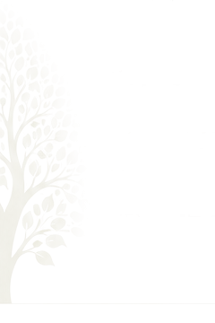

Sebevědomě
k přijímačkám
Prezenční kurz v Ostravě!!!
Matematika. Český jazyk. Seberozvoj.
Vše na jednom místě. V jednom kurzu.
Připravujeme žáky 9. tříd na přijímací zkoušky s jistotou, klidem a podporou na každém kroku.
Připravujeme na přijímačky komplexně.
Vítejte! Víme, co děti u přijímaček čeká a jak je připravit efektivně. Vy se nemusíte rozhodovat, co procvičovat nebo kde začít. Připravily jsme pro Vás promyšlený kurz, který vás přípravou na přijímačky provede krok za krokem. Nabízíme vše na jednom místě – matematiku, český jazyk a seberozvoj. Jak bude probíhat příprava a kdo jsme, najdete níže.

-
Všechny oblasti podle CERMATu
Systematicky projdeme vše, co je u přijímacích zkoušek potřeba zvládnout.
-
Živá výuka v malých skupinách
Skupinky 4–10 žáků vytvářejí prostor pro aktivní zapojení, otázky i společné hledání řešení.
-
Individuální procvičování
Každý žák se zaměří na oblasti, ve kterých potřebuje získat větší jistotu. Přehledné studijní materiály má k dispozici na jednom místě.
-
Motivace a podpora
Vedeme děti k samostatnosti, zdravému sebevědomí a klidnému přístupu k přijímacím zkouškám.
-
Klid i pro rodiče
Nemusíte nic vymýšlet ani hlídat. Připravili jsme promyšlenou cestu, která šetří čas dětem i rodičům.
Jak probíhá příprava?
Jak bude vypadat příprava z matematiky?
Blíží se přijímací zkoušky a vy se obáváte, zda vaše dítě matematiku zvládne? Zapomeňte na zdlouhavé memorování vzorců a „kuchařek“, které u ostré zkoušky často selžou.
V našem kurzu sázíme na hluboké POCHOPENÍ PRINCIPŮ. Cílem není, aby se žáci naučili postup nazpaměť, ale aby matematice skutečně rozuměli. Díky tomu si poradí i s úlohami, které je na zkouškách mohou překvapit. Nabyté matematické myšlení a logický přístup k řešení problémů navíc vašemu dítěti výrazně usnadní i samotné studium na střední škole.
Intenzivní příprava je zaměřená na všechny oblasti přijímacích zkoušek:
- ČÍSELNÉ VÝPOČTY včetně práce se zlomky, desetinnými čísly a převody jednotek
- výpočet PROCENT, úpravy algebraických výrazů a práce s daty
- řešení lineárních ROVNIC a jejich soustav, sestavení rovnice ve slovních úlohách
- geometrické výpočty a TĚLESA, u kterých prostorovou představivost trénujeme pomocí fyzických 3D modelů těles, díky nimž matematika přestává být jen abstraktní teorií na papíře
- KONSTRUKČNÍ ÚLOHY rýsujeme ručně a pro maximální názornost využíváme program GeoGebra
Pracujeme s pracovním sešitem GRADOVANÝCH ÚLOH, ve kterém obtížnost úloh stoupá postupně – od pochopení principu až po komplexní aplikaci znalostí.
Přestaňme se „šprtat“ a začněme rozumět. Pomozte svému dítěti získat jistotu, se kterou ke zkouškám z matematiky vykročí s klidnou hlavou.
Jak bude vypadat příprava z češtiny?
V každé lekci budeme pracovat s textem podobně, jako je tomu u skutečných přijímacích zkoušek. Děti si tak postupně zvyknou, že jedna úloha často vyžaduje více dovedností najednou – porozumění textu, slovní zásobu, gramatiku i logické uvažování.
Současně projdeme všechny oblasti, které CERMAT u přijímacích zkoušek ověřuje:
- porozumění textu
- komunikační a slohová výchova
- pravidla českého pravopisu
- slovní zásoba, tvoření slov
- skladbu
- tvarosloví
- literární výchova
Po společné části bude následovat cílené procvičování. Každý žák se INDIVIDUÁLNĚ zaměří především na oblasti, ve kterých potřebuje získat větší jistotu.
Na DOMÁCÍ přípravu budou mít žáci k dispozici přehledné zázemí s materiály, videi s vysvětlením učiva, procvičováním, cvičnými testy a možností konzultací. Takže pokud se budou chtít vrátit k probíranému učivu, budou mít možnost.
A co je velmi důležité – již od první lekce budou pracovat na STRATEGII, jak nejefektivněji pracovat s přijímačkovými testy tak, aby získali co nejvíce bodů.
Obrovskou výhodu získají všichni, kteří začnou už v ZÁŘÍ. Budou mít dostatek času na přípravu a na přijímačky pak půjdou S KLIDEM, JISTOTOU A SEBEVĚDOMÍM.
Proč do programu k přípravě na přijímací zkoušky zahrnujeme i téma OSOBNÍHO ROZVOJE? Protože naše děti už neumíme připravit na to, jak bude přesně vypadat trh práce, až vyjdou školu.
Stavíme proto celý seberozvojový modul na KOMPETENCÍCH důležitých PRO jejich ŽIVOT. Vedeme žáky k porozumění sebe samých z pohledu silných stránek, k rozvoji emoční inteligence, pochopení stresových situací i jejich transformace do pocitu klidu a emočního nadhledu změnou vnitřních přesvědčení.
Jak bude vypadat modul věnovaný seberozvoji?
V rámci programu SEBEVĚDOMĚ k přijímačkám se opřeme o čtyři základní pilíře sebepoznání:
SILNÉ STRÁNKY – objevíme a pojmenujeme to, v čem jsou žáci dobří. Právě jejich jedinečné schopnosti jsou základem pro rozvoj vlastního potenciálu.
Žáci si uvědomí své nejlepší předpoklady pro úspěch a pochopí, v čem spočívá jejich unikátnost. Umožníme jim zamyslet se do hloubky nad tím, co jim dělá radost, baví je a naplňuje. Pochopí více sami sebe a své dary, které pak budou umět využít v životě, mluvit o nich a postavit se za sebe v různých situacích. Naučí se také přijmout to, co se jim zdá náročné a umět to v životě efektivně kompenzovat. U žáka pak roste sebedůvěra i sebevědomí.
Díky sdílení ve skupině zároveň uvidí, že každý má jinou „výbavu“, každý je v něčem výjimečný. To vede k lepší vzájemné toleranci a pochopení, že různorodost týmu je výhodou. Zvědomění silných stránek pomáhá v této souvislosti budovat zdravější vztahy a efektivnější komunikaci v kolektivu.
EMOCE – žáci se také naučí rozumět lépe svým emocím a vnímat je jako důležitého průvodce na cestě životem. Rozvinou v sobě emoční inteligenci, která jim může pomoci se lépe rozhodovat a zvládat náročné situace.
Součástí seberozvojového modulu nacházíme i cesty k harmonizaci nervového systému skrze dechové techniky, uvolnění emocí prostřednictvím práce s esenciálními oleji či meditací s řízenou vizualizací apod.
VNITŘNÍ PŘESVĚDČENÍ – společně odhalíme myšlenky, které žáky podporují, i ty, které je naopak zbytečně brzdí. Efektivní práce s hluboce zakořeněnými podvědomými programy a limitujícími přesvědčeními postavená na nejmodernějších poznatcích z neurovědy a jednoduše funkčních metodách pomáhá zmírnit stres i napětí v těle a získat zpět pocit klidu a emočního nadhledu v každé situaci. Žáci se naučí pracovat také s myšlenkou, že chyba je přirozenou součástí celého procesu učení, pomáhá k růstu a ukazuje nám možnosti, jak příště jinak a lépe. Tím mohou nahradit nezdravou sebekritiku zdravým sebevědomím a důvěrou ve vlastní schopnosti.
VIZE A KARIÉRNÍ SMĚŘOVÁNÍ – povedeme žáky k tomu, aby přemýšleli o své budoucnosti, poznali své hodnoty a dokázali si sami zodpovědně vybírat cestu, která jim dává smysl a zároveň přináší hodnotu společnosti.
Mladý člověk, který přebírá plnou zodpovědnost za své kariérní směřování, je si vědom sám sebe, svých kvalit, ale i rezerv, využívá pak daleko lépe příležitostí, které se mu nabízí, dokáže si je pro sebe vyhodnotit a tvořivě k nim přistoupit. A to si jako rodiče dětí a mladých dospělých v dnešním turbulentním světě jistě všichni přejeme.
Podrobný harmonogram kurzu a jeho lekcí naleznete ZDE
Časový harmonogram – 1. blok, září–prosinec 2026
Matematika
Úterky:
15. 9., 22. 9., 29. 9., 6. 10., 13. 10., 20. 10., 3. 11., 10. 11., 24. 11., 1. 12.
Na výběr máte z těchto časů: 14:30–15:30, 15:40–16:40, 16:50–17:50
Český jazyk
Čtvrtky:
17. 9., 24. 9., 1. 10., 8. 10., 15. 10., 22. 10., 5. 11., 12. 11., 19. 11., 26. 11.
Na výběr máte z těchto časů: 14:30–15:30, 15:40–16:40, 16:50–17:50
Seberozvoj
4 tematická setkání:
-
Silné stránky – 1. část
pátek 18. 9. · 14:30–16:30 nebo 16:45–18:45
sobota 19. 9. · 10:00–12:00 -
Silné stránky – 2. část
pátek 9. 10. · 14:30–16:30 nebo 16:45–18:45
sobota 10. 10. · 10:00–12:00 -
Vize a kariérní přesvědčení – 1. část
pátek 6. 11. · 14:30–16:30 nebo 16:45–18:45
sobota 7. 11. · 10:00–12:00 -
Vize a kariérní přesvědčení – 2. část
pátek 27. 11. · 14:30–16:30 nebo 16:45–18:45
sobota 28. 11. · 10:00–12:00
Časový harmonogram – 2. blok, leden–duben 2027
Matematika
Úterky:
12. 1., 19. 1., 2. 2., 9. 2., 23. 2., 2. 3., 9. 3., 16. 3., 30. 3., 6. 4.*
* V týdnech, kdy nebudou společné lekce, budou mít děti připravené cvičné didaktické testy v Classroomu.
Český jazyk
Čtvrtky:
14. 1., 21. 1., 4. 2., 11. 2., 25. 2., 4. 3., 11. 3., 18. 3., 1. 4., 8. 4.*
* V týdnech, kdy nebudou společné lekce, budou mít děti připravené cvičné didaktické testy v Classroomu.
Seberozvoj
4 tematická setkání:
-
Emoce – 1. část
pátek 8. 1. · 14:30–16:30 nebo 16:45–18:45
sobota 9. 1. · 10:00–12:00 -
Emoce – 2. část
pátek 5. 2. · 14:30–16:30 nebo 16:45–18:45
sobota 6. 2. · 10:00–12:00 -
Vnitřní přesvědčení – 1. část
pátek 5. 3. · 14:30–16:30 nebo 16:45–18:45
sobota 6. 3. · 10:00–12:00 -
Vnitřní přesvědčení – 2. část
pátek 2. 4. · 14:30–16:30 nebo 16:45–18:45
sobota 3. 4. · 10:00–12:00
Volná místa ve skupinách v 1. bloku
U každého předmětu si vybíráte čas zvlášť – tady vidíte, kde je ještě volno.
Proč
právě my?
Přes 20 let praxe
ve vzdělávání
Stovky spokojených
žáků a rodičů
Jediný komplexní
kurz na trhu
Jasný plán bez starostí
pro rodiče
Individuální přístup
a podpora
Poznejte nás
Více o nás

Přijímačky nemusí být období stresu.
Pomůžeme vašemu dítěti prožít tuto cestu s jistotou a klidem.
Přihlásit dítě